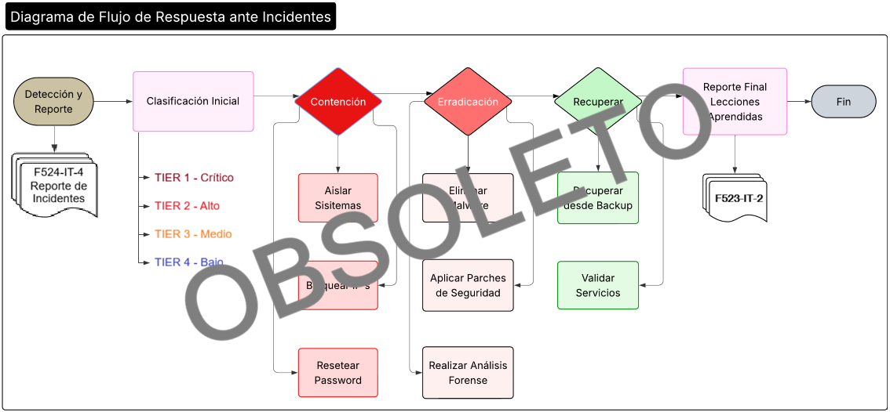

Procedimiento de Respuesta ante Incidentes
1 OBJETIVO
Establecer el proceso sistemático para detectar, contener, erradicar y recuperarse de incidentes de seguridad de la información, con especial foco en accesos no autorizados a Sistemas IT, Redes, Aplicaciones Internas y datos. Este procedimiento asegura una respuesta rápida y efectiva para minimizar el impacto, en cumplimiento de los requisitos de ISO/IEC 27001:2022, del marco TISAX, y clientes automotrices.
2 ALCANCE
Este procedimiento aplica a:
- Todo el personal de PRODISMO SRL, incluyendo empleados, contratistas y proveedores.
- Todos los sistemas de información, redes y aplicaciones bajo el alcance del Sistema de Gestión de la Seguridad de la Información (SGSI).
- Todos los equipos técnicos involucrados.
3 DEFINICIONES
- Incidente de Seguridad: Evento no deseado o inesperado que indica una posible violación de la seguridad de la información o una amenaza para ella.
- Acceso No Autorizado: Cualquier acceso a un sistema, red, aplicación o dato que contravenga la Política de Control de Accesos.
- Contención: Fase inicial de la respuesta destinada a limitar el daño y aislar los sistemas afectados.
4 PROCEDIMIENTO
4.1. Fase 1: Detección y Reporte
- La detección puede originarse por: alertas del SIEM, reportes de usuarios, hallazgos de auditorías, etc.
- Cualquier persona que detecte un posible incidente debe reportarlo de inmediato mediante el canal definido (ej.: ticket de urgencia, correo al DIT, teléfono/whatsapp).
- El DIT realiza una clasificación inicial para determinar la criticidad.
4.2. Fase 2: Contención
El objetivo es evitar la propagación del incidente. Las acciones inmediatas incluyen, pero no se limitan a:
- Bloquear IPs involucradas en firewalls perimetrales e internos.
- Resetear contraseñas de cuentas comprometidas o sospechosas.
- Desconectar sistemas gravemente afectados de la red.
- Revocar accesos y sesiones activas de los usuarios o cuentas comprometidas.
- Aislar segmentos de red afectados.
4.3. Fase 3: Erradicación
El objetivo es eliminar la causa raíz del incidente.
- Realizar un análisis forense básico para determinar el vector de ataque (ej.: phishing, vulnerabilidad explotada, credenciales robadas).
- Eliminar malware, backdoors o cualquier artefacto malicioso identificado.
- Aplicar parches de seguridad a las vulnerabilidades explotadas.
- Cambiar claves y certificados si se considera que pudieron ser comprometidos.
4.4. Fase 4: Recuperación
El objetivo es restaurar los sistemas y servicios a un estado operativo normal.
- Restaurar sistemas y datos desde backups limpios y verificados.
- Reconectar los sistemas a la red de forma controlada y monitorizada.
- Validar la funcionalidad de los servicios restaurados.
- Realizar pruebas de seguridad para asegurar que la amenaza ha sido eliminada.
4.5. Fase 5: Lecciones Aprendidas (Post-Mortem)
- Realizar una reunión de lecciones aprendidas con todos los involucrados.
- Completar el F421-IT-3 Informe Post-Incidente .
- Identificar acciones de mejora para prevenir la recurrencia (ej.: actualizar políticas, mejorar controles, capacitar usuarios).
- Actualizar este procedimiento de ser necesario.
5 DIAGRAMA DE FLUJO
A continuación, se presenta el flujo general de respuesta ante incidentes:

Diagrama de flujo del Procedimiento de Respuesta ante Incidentes
6 RECOMENDACIONES PARA IMPLEMENTACIÓN
- Integración:
- Conectar la M421-IT-1 Matriz de Roles y Permisos con el sistema IAM (Microsoft Identity Manager) para agilizar la revocación de accesos durante la contención.
- Auditoría:
- Comparar el F421-IT-4 Informe de Revisión Periódica de accesos con los logs de sistemas críticos para detectar discrepancias y accesos no autorizados de forma proactiva.
7 REVISIONES DEL DOCUMENTO
| Rev. N° | Fecha | Descripción |
|---|---|---|
| 0 | 25/8/2025 | Primera Emisión del documento |
| 1 | 18/2/2026 | Revisión completa del documento |